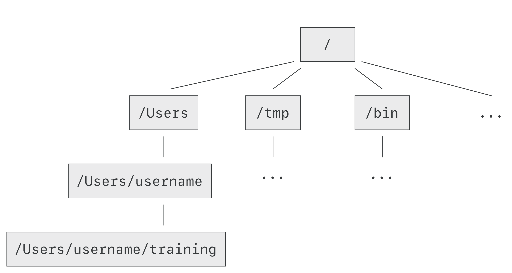

2 The directory file structure
As you’ve already just seen, you can move around in different directories or folders at the command line. Why would you want to do this, rather than just navigating around the normal way.
When you’re working with programs, you’re working with your data and it’s key to be able to have that data in the right place and make sure the program has access to the data. Many of the problems people run in to with command line bioinformatics programs is not having the data in the place the program expects it to be.
Now let’s see where we are by using the command pwd which stands for “print working directory”:
$ pwdThe output should look like /Users/[username]/training (/home/[username]/training) but with you username. This is called a hierarchical file system structure, like an upside down tree with root (/) at the base.

To display your username, you can use the command whoami:
$ whoamiWhen you are working at your computer (or log in to a remote computer), you are on one of the branches of that tree, your home directory (/home/username).
2.1 Moving around the file system
Let’s practice moving around a bit.
We’re going to work in that data directory we just downloaded. Now we know that training-data is a directory/folder, thus we can go into that directory:
$ cd training-dataAnd now, let’s check where we are:
$ pwdThis is called a hierarchical file system structure, like an upside down tree with root (/) at the base.
When you are working at your computer (or log in to a remote computer), you are on one of the branches of that tree, your home directory (/home/username).
Now we can list the content of training-data:
$ lsTo return to our training directory that is higher in the tree (closer to the root), we can use the following:
$ cd ..Now let’s check where we are again with pwd.
2.2 Go home
To return to your home directory, you can use the command cd:
$ cd ~You can also use
$ pwd2.3 Listing the contents of other directories
By default, the ls commands lists the contents of the working directory (i.e. the directory you are in). You can always find the directory you are in using the pwd command. However, you can also give ls the names of other directories to view. Navigate to the home directory if you are not already there.
Now that we are in your home directory, we can list the content of training :
$ ls trainingThis will list the contents of the training directory without you having to navigate there.
The cd command works in a similar way. Try entering:
$ cd training/training-dataand you will jump directly from your home directory to training-data without having to go through the intermediate directory.
We can now go back to the home directory either directory by using .. twice:
$ cd ..
$ cd ..or by using the ~:
$ cd ~2.4 Full vs. Relative Paths
The cd command takes an argument which is the directory name. Directories can be specified using either a relative path a full path. The directories on the computer are arranged into a hierarchy. The full path tells you where a directory is in that hierarchy. Navigate to the home directory. Now, enter the pwd command and you should see:
/home/[username]which is the full name of your home directory. This tells you that you are in a directory called username, which sits inside a directory called home which sits inside the very top directory in the hierarchy. The very top of the hierarchy is a directory called / which is usually referred to as the root directory. So, to summarize: username is a directory in home which is a directory in /.
Now enter the following command:
$ cd ~/[username]/training/training-dataThis jumps to training-data. Now go back to the home directory (cd). We saw earlier that the command:
cd training/training-datahad the same effect - it took us to the training-data directory. But, instead of specifying the full path, we specified a relative path. In other words, we specified the path relative to our current directory (pwd). A full path always starts with a /. A relative path does not. You can usually use either a full path or a relative path depending on what is most convenient. If we are in the home directory, it is more convenient to just enter the relative path since it involves less typing.
Over time, it will become easier for you to keep a mental note of the structure of the directories that you are using and how to quickly navigate amongst them.